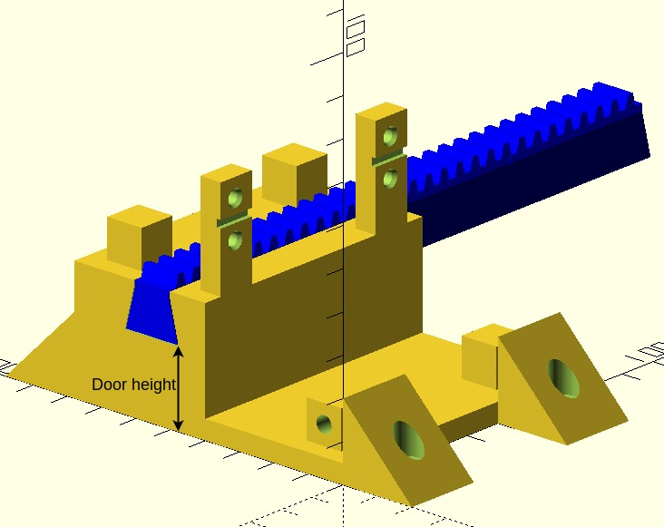
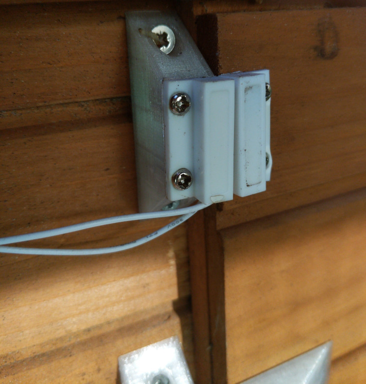
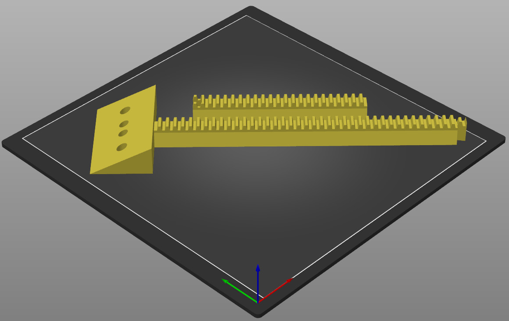
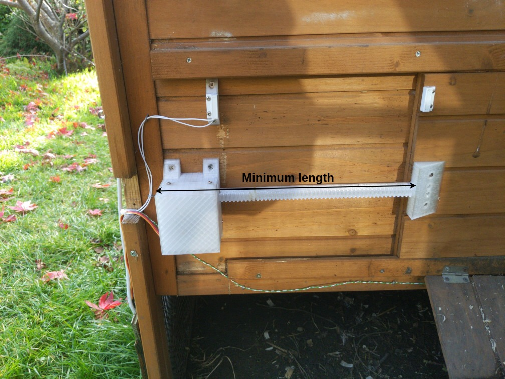

Printing the models¶
Overview¶
To start, customise and print the OpenSCAD models in /openscad_models as detailed below. Some of these are modules used in other files or libraries and you only need to print the models with a check mark in the print column. You should then assemble the models as per the instructions —
Filename |
Description |
Print? |
Required filament |
|---|---|---|---|
|
The door opener and cover. |
✓ |
125g |
|
The door opener cover, used in the above file. |
||
|
Gear generator library by Leemon Baird, used to generate the rack and servo gear. |
||
|
A mock servo for modelling purposes, not intended to be printed. |
||
|
Fully assembled servo, including servo horn and gear, not intended to be printed. |
||
|
A mock servo horn, not intended to be printed. |
||
|
Mounting bracket module, incorporated into the door opener, Pico case and switch panel. |
||
|
Case and cover for the Raspberry Pi Pico. |
✓ |
147g |
|
Mounting block for reed switches to bring them in line with the door. |
✓ |
12g |
|
Various sizes of screw holes used throughout the project. |
||
|
Posts for brass M3 screw inserts, used in both the door opener and Pico case. |
||
|
Gear which is glued to a metal servo horn and engages with the rack. |
✓ |
5g |
|
Posts which the servo is screwed to, used in the door opener |
||
|
The rack which sits in the channel in the door opener and engages the servo gear, the far end is attached to the chicken coop door. |
✓ |
54g (25% infill) |
|
A control panel to be attached to the front of your coop, has holes for a 7mm momentary switch and two 5mm LEDs. |
✓ |
14g |
Total: 357g |
Customisation and setup¶
General notes¶
I printed these models using a Creality Ender 3 v2 printer, and the default settings for the rack in terms of sizing and cut position account for that.
You’ll obviously need OpenSCAD and a slicer, I personally use Prusaslicer. You’ll also need to install the Belfry OpenSCAD library v2, installation instructions are on their Github page.
This door opener is built for the dimensions of my chicken coop, and as such will likely need customisation before it is suitable for yours. Generally speaking, I have implemented the most important customisation options as OpenSCAD parameters which can be changed directly within the OpenSCAD window, and direct changes to the code should be largely unnecessary. Once you’ve made your changes for each model, render the model and export it to .stl, ready for slicing.
I’d suggest you use PETG to print your parts due to the increased tensile strength of that material, especially for the gear and rack but you can probably get away with using PLA if you really have to.
In terms of required filament, the amounts quoted are at 15% infill unless otherwise noted.
Door opener (door_opener.scad)¶
You’ll need to change the door height (set to 20mm by default) so it is commensurate with the distance between where the door opener attaches to the coop and the top of your door, so that the bottom of the rack is in line with the top of the door and you can screw it into the door. To illustrate —
{kind=link}
Pi case (pi_case.scad)¶
For the cable entry hole in the base, the defaults for lip_diameter, lip_height and inner_diameter are sized for a 30mm cable grommet I had lying around and may need to be tuned for something you buy (you could alternatively omit the grommet altogether). You should also ensure that supports are generated underneath the raised portions left and right of the mounting holes for the Pico in your slicer when printing.
Reed switch mounts (reed_switch_mount.scad)¶
The reed switch mounts need to be of a suitable height so they are in line with the top of the door, so that when the reed switches are attached they line up with the magnets, which are attached to the door. Pictorially —
{kind=link}
In my case, I need two reed switch mounts of different heights as the point at which these are attached to my coop are at different heights relative to each other, but this may be unnecessary for your coop and you could potentially use two mounts of the same height.
Regardless, the customisation options allow for you to generate a tall or short reed switch mount as required, and you can customise both the “tall” and “short” heights if required. You should render and export two mounts as per your requirements.
Servo gear (servo_gear.scad)¶
There are no customisation options for this model, just render it and export to .stl.
Servo rack (servo_rack.scad)¶
The servo rack provides the option of cutting it in two at a given point to allow a longer rack to be printed than would otherwise be possible on a typical printer bed. The default settings print a rack with a toothed portion of 312.5mm in length and will print on 220x220mm print bed when rotated 45 degrees around the Z axis (i.e. diagonally). Pictorially —
{kind=link}
Main options¶
You need to set the minimum length of the rack to the distance between the edge of your coop door when closed, to the left hand edge of the door opener, i.e.
{kind=link}
Note that the actual generated length is 2.5mm longer than the length you specify due to tooth spacing.
You can also use the centre holes checkbox to determine whether holes in the centre are generated for 2.5 x 16mm screws (the screws included with my door), or whether all the holes are for 6x½ imperial screws. You probably want to untick this checkbox.
Cutting options¶
You can enable or disable cutting the rack at all using the dovetail rack checkbox, the options that follow are only applicable when this is checked.
cut length determines the point at which the right hand side of the rack is cut, and includes the length of the bracket portion (40mm). I’d suggest you make this as long as possible as will fit on your print bed as to minimise the length of the joined portion.
cut xand cut y determine the position of the cut portion (left hand side) of the rack, you might need to adjust this so that you can fit the entire model on your print bed.
$slop determines the tolerance included for the dovetail joint, this is set to 0.2mm for my printer (a Creality Ender 3 v2) by default. The BOSL2 library github wiki has a calibration print that you can use to determine the correct value if you don’t want to guess.
Switch panel (switch_panel.scad)¶
There are no customisation options for this model. Be sure to print with supports in the interior portion of the switch panel, where the LEDs and momentary switch are mounted.
Assembly¶
Once you’ve customised and printed all the parts listed above, you’ll need to do the following assembly so that you’re ready to wire everything up and mount the project to your coop. You may want to refer back to video and images to get a general feel for how everything fits together —
Servo rack¶
Glue the two parts of the rack together at the dovetail joint and try as best you can to ensure that the bottom is flat at the join. You’ll probably find that the two sides don’t line up exactly when the glue is dry, and you should sand the join to prevent the rod from hitching at the join when the door opens and closes.
Servo gear¶
Glue the flat side of the aluminium servo horn into the centre of the servo gear. Once dry, attach to the hub of the servo motor with the M3 x 8 screw.
Door opener¶
Place the four brass M3 screw inserts into the posts on the front and rear of the base of the door opener, and melt into place using a soldering iron. Lubricate the channel for the door opening rod with a small amount of silicone grease. Mount the servo motor on the mounting posts using the four M3 x 12 screws and nuts — looking at the servo from the channel side, the gear should be on the right side. Insert the rack into the left hand side of the channel so it is touching the gear and will be engaged by the gear when it moves anti-clockwise. Run the wires for the servo through the hole in the cover, and attach the cover to the base with the four M3 x 10 screws.
Pi case¶
Place the four brass M3 screw inserts into the posts at the top and the holes in the bottom wall of the pi case, and melt into place using a soldering iron. Place the four brass M2 screw inserts into the four holes in the centre of the case, and also melt those into place. Solder the two 20 pin headers onto the Pico so that the longest portion of the header is on the top (short section is soldered to the board on the underside). Screw the Pico into place in the centre of the case using the four M2 x 6 screws so that the micro USB connector is facing the hole in the wall. Push the 30mm cable grommet into place, if using. Mount the female DC connector on the left raised portion in the base using cable ties, and do the same with the relay module on the right raised portion. You can now do a test fit of the cover to ensure it fits and the cable ties don’t cause problems — the ones I used were relatively thin.
Reed switch mounts¶
Mount the reed switches to the reed switch mounts using the included 2.5 x 10mm screws.
Switch panel¶
Looking at the switch panel from the front with the hood portion at the top, glue the green LED into the left hole and the red LED into the centre hole. Once dry, screw the 7mm momentary switch into place into the right hand hole such that the nut is on the front side of the panel.